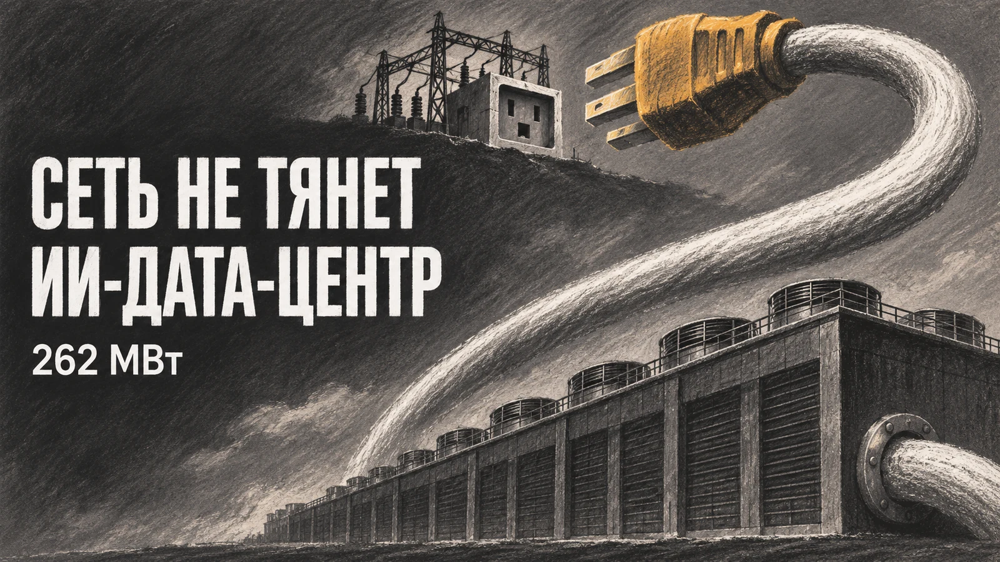

Инфраструктура ИИ
Вычисления, дата-центры, чипы, облака, серверы и энергоснабжение.
28 ноября 2026
Илон Маск запустит миллион спутников для ИИ
Новости ИИFCC одобрила развёртывание орбитальной вычислительной сети Starmind компании SpaceX численностью до миллиона спутников. Полное развёртывание предусмотрено к 2040 году.

AMD отправила в производство чип с доработками от нейросети OpenAI
Новости ИИOpenAI сообщила об улучшении параметров отдельных схем графических процессоров AMD до 14%. Часть предложенных нейросетью изменений вошла в проект чипа, отправленный на изготовление.
27 ноября 2026

ИИ-гиганты США проигнорировали климатическое соглашение ООН
Новости ИИНа COP31 представили добровольное соглашение о сокращении воздействия ИИ на окружающую среду. К 24 ноября из крупных технологических компаний его подписала только Alibaba.

NVIDIA заработала $65 млрд чистыми за три месяца, а дата-центры принесли ей 93% выручки
Новости ИИNVIDIA получила $115,8 млрд квартальной выручки и $65,3 млрд чистой прибыли, начала поставки Vera Rubin NVL72.
26 ноября 2026

В городе OpenAI и Anthropic запретили строительство новых дата-центров на 10 месяцев
Новости ИИГородской совет Сан-Франциско одобрил продление моратория на разрешения для новых дата-центров на 10 месяцев и 15 дней из-за ограничений городской инфраструктуры.

Семья любовницы Хуанга засветилась в сделках с ИИ-серверами на $270 млн
Новости ИИReuters обнаружило финансовые соглашения об ИИ-серверах и вычислительных модулях на $270 млн у компаний, связанных с родственниками Алисы Хуанг. США внесли Megaspeed в торговый чёрный список.

OpenAI получит 457 МВт на чипах AMD. Когда заработают серверы?
Новости ИИTensorWave поставит OpenAI выделенные мощности на ускорителях AMD Instinct MI455X. Первые серверы планируют ввести в первой половине 2027 года, а полный объём ожидается к началу 2028-го.

Даже один ИИ-дата-центр оказался слишком мощным для электросетей половины исследованных стран
Новости ИИЕБРР оценил электросети 17 экономик региона: почти половина не может принять один крупный ИИ-дата-центр на 262 МВт без повышения пиковой нагрузки.
25 ноября 2026

Amazon заплатит $7,5 млрд за технологию ускорения собственных ИИ-чипов
Новости ИИAmazon договорилась о покупке технологии Decart Optimization Stack и найме её разработчиков. Bloomberg оценивает сделку в $7,5 млрд; официальная сумма не раскрыта. Сделке предстоит получить одобрение регуляторов.

США собрали десять стран для защиты ИИ от Китая
Новости ИИСША и девять партнёров подписали Сан-Францисскую декларацию Pax Silica о совместной защите технологий, инфраструктуры и цепочек поставок ИИ. Новых экспортных ограничений соглашение не вводит.
24 ноября 2026

Возвращение Хуанга подняло стоимость NVIDIA почти на триллион долларов за день
Новости ИИАкции NVIDIA выросли на 31,48% по итогам торгов 23 ноября после возвращения Дженсена Хуанга. Капитализация увеличилась примерно на $952 млрд.

Anthropic разрешила компаниям поселить ИИ-агентов Claude на своих серверах
Новости ИИAnthropic открыла закрытую бету самостоятельного размещения инфраструктуры Claude Managed Agents. Управление и история агентов могут работать на серверах клиента, а модель остаётся у внешнего провайдера.

Компания бывшего главы «Яндекса» замахнулась на $45 млрд, но стройка для Microsoft уже буксует
Новости ИИNebius Аркадия Воложа планирует капитальные расходы $40–45 млрд на ИИ-инфраструктуру в 2027 году. При этом дата-центр для Microsoft в Нью-Джерси отстаёт от графика.
23 ноября 2026

В Китае открыли биржу нейросетей. Уже 50 миллионов запросов в день
Новости ИИBaidu представила Token Exchange, площадку для сравнения и покупки доступа к ИИ-моделям. Компания заявляет о 50 млн обращений в день и более 100 предложениях.

403 дата-центра США загрязняют атмосферу как целая Дания. Greenpeace взялась за NVIDIA
Новости ИИИсследователи оценили выбросы 403 американских дата-центров в 25,7 млн тонн CO₂ за год. Greenpeace отдельно сообщила о росте выбросов в цепочке поставок NVIDIA на 725% с 2020 года.

Google доверила Безосу запуск космических ИИ-серверов после испытания с Маском
Новости ИИGoogle заключила соглашение с Blue Origin о запуске спутников Project Suncatcher на New Glenn в первом квартале 2029 года. Каждый аппарат получит вычислительные мощности масштаба серверной стойки.

SpaceX нашла $44 млрд на чипы NVIDIA, но кредиторы хотят оставить их на Земле
Новости ИИSpaceX привлекает около $44 млрд на ускорители NVIDIA Vera Rubin. По данным Financial Times, кредиторы пытались ограничить отправку залоговых чипов в космос.
21 ноября 2026
Трамп пригрозил «огромным налогом» за ИИ-дата-центры за границей
Громко сказаноДональд Трамп пригрозил американским компаниям «огромным налогом» за строительство дата-центров за границей, но не назвал ставку, сроки и механизм его введения.

США разрешили Китаю 880 тысяч ИИ-чипов — даже фирмам из военного списка Пентагона
Новости ИИКомитет Палаты представителей США раскрыл 21 разрешение на экспорт 879 868 ускорителей NVIDIA и AMD в Китай. Среди согласованных получателей — Alibaba, Tencent, Baidu и BYD.